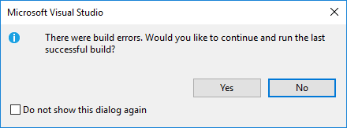

Data Types
How C# handles values and variables is one of the most significant differences between it and Python.
Static vs. Dynamic Typing
Python is a dynamically typed language. In a dynamically typed language a variable or parameter can refer to any kind of value at any time. When the variable is used, the interpreter figures out what type it is and behaves accordingly.
C# is a statically typed language. In a statically typed language the association between a variable or parameter and the type of value it can refer to is determined when the variable or parameter is declared. Once the declaration is made it is illegal for it to refer to a value of any other type.
For example, this is legal in Python:
x = "dog"
x = 42If we were to inspect the type of x after the first line executes (e.g. using Python's type() function) we would find that it was a string. After the next line executes, it is an integer. x is allowed to hold values of different types.
However, the corresponding code in C# will result in a build error:
string x = "dog";
x = 42;The compiler error would occur when we try to assign 42 to a variable of type string. This is simply not allowed in C#.
Formally, this means that in a statically typed language we must declare the type of every variable and parameter. This is done by preceding the variable or parameter name with the name of its data type, as we did in the example above: string x = "dog".
We only need to specify the type of a variable or parameter when declaring it. Subsequent usage does not require specifying the type, and doing so will result in an error.
Dynamic and static typing are examples of different type systems. The type system of a programming language is one of the most important high-level characteristics that programmers use when discussing the differences between languages. Here are a few examples of popular languages falling into these two categories:
- Dynamic: Python, Ruby, C#script, PHP
- Static: C#, C, C++, Java, Ada
This major difference between Python and C# will mean that we'll need to pay much more attention to types when writing C#. Let's begin by exploring the most common and important data types in this language.
Built-In Types
One of the great things about Python is that all of the basic data types are objects. In C# this is also the case, though the so-called built-in data types also have short names that differ from typical class name conventions.
We provide here a list of some of the most common types, along with both short and class names. We'll generally prefer to use the short names for each of these.
| Short name | .NET Class | Examples | Notes |
|---|---|---|---|
int |
Int32 |
-5 1024 |
|
float |
Single |
1.212 3.14 |
|
double |
Double |
3.14159 2.0 |
Doubles are twice as precise (i.e. can hold much longer decimal numbers) than floats |
char |
Char |
'a' '!' |
A single Unicode character. Must be enclosed in single quotes '' to be a character; double quotes "" indicate a string |
string |
String |
"LaunchCode" "a" |
A sequent of characters. Must be enclosed in double quotes "; single quotes ' indicate a character |
bool |
Boolean |
true false |
Note that booleans in C# are not capitalized as they are in Python |
Not all built-in data types in C# are listed here, only the most commonly used types that beginners are likely to encounter. If you're curious, read more about built-in types in C#.
As in Python, operators - such as + and * - are type-dependent. That is, we can only use them on allowed types, and their effects are different depending on which types we use them on. The + operator is a good example of this. We can use + to add numeric types together, such as 2 + 2 which results in 4. But we can also use it to concatenate strings: "2" + "2", for example, which results in "22". What the operators do depends on the type they are operating on, and we may not mix types in arbitrary ways ("2" + 2 results in a compiler error).
string
Since strings are so important, let's explore them in a bit more depth.
Strings in C# and Python are quite similar. Like Python, C# strings are immutable. However, manipulating strings in C# is not quite as obvious since strings do not support an indexing or slicing operator. That is not to say that you can’t index into a C# string; you can. You can also pull out a substring just as you can with slicing. The difference is that C# uses method calls where Python frequently uses operators.
The table below maps common Python string operations to their C# counterparts. For the examples shown in the table, we will use a string variable called str.
| Python | C# | Description |
|---|---|---|
str[3] |
str.Substring(3,1) |
Return character in 3rd position |
str[2:5] |
str.Substring(2,3) |
Return substring from 2nd to 4th, i.e. substring starting at index 2 and 3 characters long |
len(str) |
str.Length |
Return the length of the string |
str.find('x') |
str.IndexOf('x') |
Find the first occurrence of 'x' |
str.split(',') |
str.split(',') |
Split the string at ',' into a list/array of strings |
str + str |
str + str |
Concatenate two strings together |
str.strip() |
str.Trim() |
Remove any whitespace at the beginning or end |
str.lower() |
str.ToLower() |
Return a copy of str with all characters lowercase |
Example: The TempConv Program
Let's go back in time and look at one of our very early Python programs. Here is a simple Python function to convert a Fahrenheit temperature to Celsius.
def main():
fahrenheit = int(input("Enter the temperature in F: "))
celsius = (fahrenheit - 32) * (5.0 / 9.0)
print("the temperature in C is: ", celsius)
if __name__ == '__main__':
main()Next, lets look at the C# Equivalent.
using System;
namespace TempConv
{
class Program
{
public static void Main(string[] args)
{
double fahrenheit;
double celsius;
string input;
Console.WriteLine("Temperature in F:");
input = Console.ReadLine();
fahrenheit = double.Parse(input);
celsius = (fahrenheit - 32) * 5 / 9;
Console.WriteLine("The Temperature in C is: " + celsius);
Console.ReadLine();
}
}
}There are several new concepts introduced in this example. We will look at them in the following order:
usingstatement- Variable declaration
- Input/output and the
Consoleclass
using
In C#, you can use any class that is available without having to import the class - subject to two very important conditions:
- The C# compiler must know that the class exists
- You must use the full name of the class
You can think of the using statement in C# as working a little bit like the from module import xxx statement in Python. However, behind the scenes the two statements actually do very different things.
The first important difference to understand is that the class naming system in C# is very hierarchical. The full name of the Console class is really System.Console. You can think of this name as having two parts. The first part, System, is called the namespace, and the last part is the class. We’ll talk more about the class naming system a bit later. The second important difference is that it is not the using statement’s responsibility to load classes into memory. That task falls on the assembly**, which is the unit of compiled code created by Visual Studio (or the C# compiler, more generally).
The using statement tells the compiler that we are going to use a shortened version of the class’s name. In this example we are going to use the class System.Console, but we can refer to it as just Console. We could use the System.Console class without any problem and without any import statement provided that we always referred to it by its full name.
Don't just trust us, try it yourself! Remove the using statement and change Console to System.Console in the rest of the code. The program should still compile and run.
Declaring Variables
In the example above, these lines contain variable declarations:
double fahrenheit;
double celsius;
string input;Specifically we are saying that fahrenheit and celsius are going to reference objects that are of type double. The variable input will contain a string. This means that if we were to try an assignment like fahrenheit = "xyz" the compiler would generate an error because "xyz" is a string and fahrenheit is supposed to be a double.
For Python programmers the following error is likely to be even more common. Suppose we forgot the declaration for celsius and instead left that line blank. What would happen if we try to run our program?

The compiler detects an error and Visual Studio displays this message. Were you to look at the error pane, you would see the message: "The name 'celsius' does not exist in the current context".
The general rule in C# is that you must decide what kind of an object your variable is going to reference and then you must declare that variable before you use it. There is much more to say about the static typing of C# but for now this is enough.
Input / Output and the Console Class
Console input and output is facilitated by the class System.Console. We'll rely heavily on just two methods of this class: Console.WriteLine and Console.ReadLine.
Console.WriteLine can take parameters of various types, including string, char, double, bool, and others. However, unlike the print function in Python, we can only provide it with a single argument. Thus, we'll need to manually concatenate strings and other values, converting types if necessary. As with Python, a newline character is output after the given message.
year = 2017
print("Hello", "World")
print("The year is:", year)int year = 2017;
Console.WriteLine("Hello" + "World")
Console.WriteLine("The year is " + year.ToString());Similarly, Console.ReadLine returns input as a string. To convert it to a desired type, you can generally use the syntax [TYPE].Parse(value), with [TYPE] replaced by the given type. Here's an example:
string userInput = Console.ReadLine();
int year = int.Parse(userInput);This is very similar to what we did in Python:
user_input = input()
year = int(user_input)Class Types
In addition to the types introduced so far, any class in C# defines a type. Classes and objects are conceptually the same as in Python: A class is a template, or blueprint, for creating objects. We'll have much more to say about classes and objects, but for now you need to be comfortable seeing the basic syntax of class types and class creation.
If I have a class Cat with a constructor that takes no arguments, I can declare and create a new instance of Cat using its constructor. In Python, we did this as follows:
my_cat = Cat()And the C# version is:
Cat myCat = new Cat();Each of these statements creates a new variable that is initialized to hold a new Cat object. Note that in C#, we must declare the variable's type. Also note that we precede the constructor with the new keyword. And, of course, the C# example ends with a semi-colon.
Variables and parameters that are of the type of a class are said to be of reference type (in contrast to primitive type). In plain English, we would say of the C# example: "myCat is a reference variable of type Cat."
Reference and Value Types
We can group types in C# into two categories: value types and reference types. Variables holding value types directly contain their data, and include numeric types (int, double, etc.), bool, and a handful of others that we won't encounter in this course.
As mentioned above, classes define reference types. A variable of a reference type (such as myCat above) does not actually store the object in question. Instead, it stores a reference to the object. A reference is literally a memory address. We visualize references as an arrow pointing to the object in memory.
Consider this code:
int catAge = 11;
Cat myCat = new Cat();
Cat sameCat = myCat;Visually we can represent these three variables as shown here.

Since int is a value type, the variable catAge functions as a box holding the integer value 11. On the other hand, myCat is a reference variable, since it holds an object. The variable actually stores the address of the object, which we visualize as an arrow from the variable box to the object.
When we assign a value to a reference type, as in Cat sameCat = myCat, we are not creating a second copy of the object, but instead are creating a second "arrow" pointing to the same object.
The distinction between reference types and value types is important, but can be difficult to wrap your brain around at first. We will see that reference types are handled differently in essential and important ways in a lot of different situations.
Arrays
While Python has the basic list type, C# has multiple ways of storing ordered data. The most basic is that of the array.
An array is an ordered, fixed-size collection of elements. Since C# is statically typed, arrays may only store one type of object. We can create an array of integers or an array of strings, but we may not create an array that holds both integers and strings.
The syntax for creating an array capable of holding 10 integers is:
int[] someInts = new int[10];To create an array of a different size, or to hold different type values, replace 10 and int (on both sides of the assignment). Unlike lists in Python, arrays in C# may not change size once created. This turns out to be not very practical, so thankfully C# provides more flexible ways to store data, which we'll explore in a later lesson.
In addition to the technique above, we can initialize an array using a literal expression:
int[] someOtherInts = {1, 1, 2, 3, 5, 8};Here, the size is implicit in the number of elements in the literal expression {1, 1, 2, 3, 5, 8}.
To access array elements, we use square brackets, as with Python lists.
int anInt = someOtherInts[0];As with Python, arrays have zero-based indexing.
Aside from using arrays to build some simple loop examples in the next lesson, we'll only use them in special cases. However, they are ubiquitous in C# programming, so it's good to know how they work.
Static Methods
In pure object-oriented languages like C# and Java, we don't have functions in the sense you're used to. Functions may not be declared outside of a class. Within the context of a class, functions are referred to as methods. We'll we adopt this terminology from now on.
We'll dive into learning about classes and objects in C# soon enough, but first let's learn a little about static methods, which behave somewhat similarly to functions as you knew them in Python.
A static method is one with the static keyword, as our Main method above had:
public static void Main(string[] args)
{
// some code
}Let's show you how you might create your own methods in other contexts. To do so involves using a different name for our method, and adjusting the return and parameter types accordingly.
Let's create two classes in C# to demonstrate using static methods. One class will have a Main method and the other will have a method that we want to call from within Main.
namespace HelloMethods
{
public class Program
{
public static void Main(string[] args)
{
string message = Message.GetMessage("fr");
Console.WriteLine(message);
Console.ReadLine();
}
}
}namespace HelloMethods
{
public class Message
{
public static string GetMessage(string lang)
{
if (lang.Equals("sp")) {
return "Hello World";
}
else if (lang.Equals("fr"))
{
return "Bonjour le monde";
}
else
{
return "Hola Mundo";
}
}
}
}We won't explore every new aspect of this example, but rather will focus on the two methods.
The Main method in the HelloMethods class is the same in structure as that of our previous example. Take a look at the Message class. Note that it does not have a Main method. In a C# project, only one Main method is allowed. When the project is compiled and run, the Main method indicates what should be executed, and if there were multiple Main methods this would be ambiguous.
The Message class has a method of its own: GetMessage. Like Main, it has the static keyword. Unlike Main, GetMessage has a return type of string and a single parameter, string lang.
Since C# is statically typed, each method must declare its return type - that is, the data type of what it will return - along with the type of each parameter. One consequence of this that may not be immediately obvious is that methods in C# may not return different types of data. For example, we would not be able to replace the last return statement of GetMessage with something like return 42;. This would be flagged as a compiler error.
Finally, let's note how a static method is called. The first line of Main in the Program class is:
Message.GetMessage("fr");To call a static method we must use the name of the class in which it is defined, followed by ., followed by the name of the method.
We are able to call this method from another class because it is declared to be public. If we wanted to restrict the method from being called by another class, we could instead use the private modifier. We'll explore access modifiers in more depth in coming lessons.